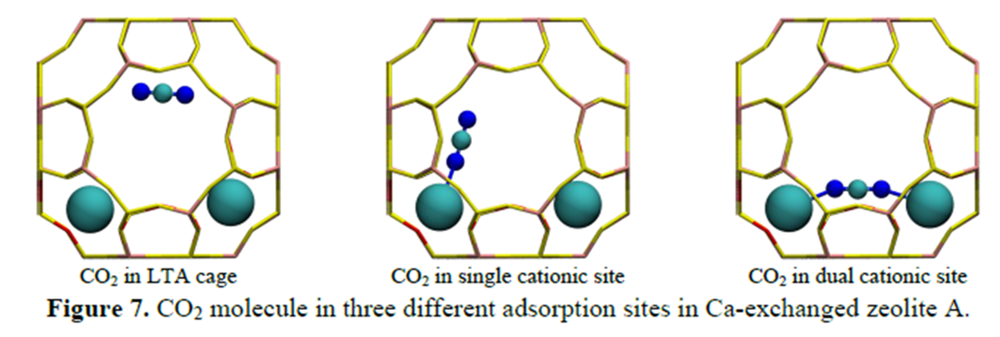

5.4. Exercises#
5.4.1. Exercise 1#
One major application of density functional theory is performing structural relaxation (i.e., geometric optimization).
Begin by building a linear CO2 molecule in ASE with a C–O bond length of 1.8 Å.
from ase import Atoms
#Code here
Next, relax your molecule using SPARC with parameters of your choosing. Confirm that your relaxed C–O bond length matches that from experimentation. Check the manual for the appropriate flags for relaxation.
import os
from sparc import SPARC
from ase.units import Bohr,Hartree,mol,kcal,kJ,eV
from ase.io import read, write
#Code here
Repeat this exercise using the Quantum Espresso DFT package.
# code here
5.4.2. Exercise 2#
In this exercise, we will consider the adsorption of an atomic oxygen on Pt(111) surface, instead of O2 molecule. Consider fcc and hcp active sites. Determine the most stable adsorption site of an oxygen atom on Pt(111) surface and the corresponding adsorption energy when the surface is saturated with one monolayer of oxygens (in this case, one O atom for each Pt surface atom).
from ase import Atoms, Atom
from ase.build import bulk, molecule, surface, add_adsorbate, fcc111, fcc100
from ase.constraints import FixAtoms
from ase.io import read
#Code here
5.4.3. Exercise 3#
CO2 can adsorb in Ca-LTA in one of three positions shown in the figure below. Note that the large teal atoms are calcium.

Using a DFT package and calculation parameters of your choice, compute the CO2 adsorption energy for each of the three positions in Ca-LTA. This exercise requires that you manually add CO2 molecules into the Ca-LTA framework and that you perform several structural relaxations at different geometries. You can fix the atomic positions of Ca-LTA to reduce the computational cost Comment on which of the active sites is the most stable. Based on the energies, is it reasonable to assume a single active site dominates? How would you expect the results to shift as the active sites become saturated?
# First, relax the pristine MOF
import os
from ase import Atoms, io
from ase.io import read, write
from ase.build import bulk, molecule, surface, add_adsorbate
from ase.units import Bohr,Hartree,mol,kcal,kJ,eV
#These constraints allow you to fix atoms. See ASE documentation
from ase.constraints import FixAtoms
from sparc import SPARC
#Code here
# Add CO2 to relaxed pristine structures
from sparc import SPARC
from ase import Atom
from ase.build import bulk, molecule, surface, add_adsorbate
from ase.units import Bohr,Hartree,mol,kcal,kJ,eV
from ase.io import read, write
import numpy as np
#Code here
Responses here